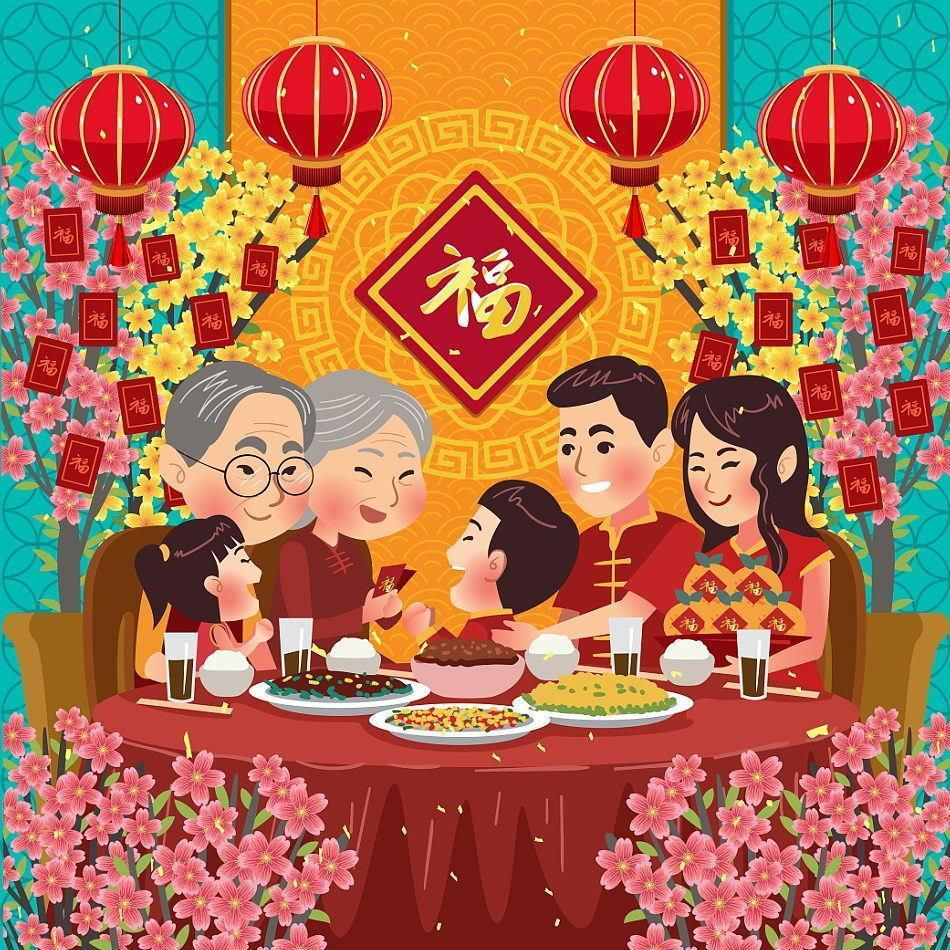

 Sekitar 3.800 tahun lampau, masyarakat agraris kuno di China rutin melangsungkan ritual pemujaan untuk beragam hasil bumi. Meski dilakukan secara rutin, tanggal upacara ini belum pasti setiap tahunnya sampai masa Dinasti Han yang memerintah (202 sebelum masehi-220 sesudah masehi), ketika Kaisar Wudi menitahkan untuk menggunakan kalender lunar. Hari pertama pada bulan purnama penanggalan ini pun ditetapkan sebagai waktu dilangsungkannya seremoni.
Upacara syukur para petani tersebut menjadi embrio festival musim semi yang dirayakan sampai sekarang. Festival ini menyambut akan datangnya musim semi setelah musim dingin. Sejak periode Dinasti Han, festival sekaligus tahun baru ini lalu menjadi hajatan nasional. Pemerintah turut melakukan karnaval, seluruh penduduk juga berkumpul untuk merayakannya. Aktivitas aktivitas baru untuk merayakan festival ini juga lantas muncul, seperti begadang, membakar bambu layaknya kembang api pada masa sekarang, atau menggantung bilah-bilah kayu persik.
Perayaan imlek ini meliputi sembahyang imlek, sembahyang kepada Thian dan yang terakhir yaitu perayaan Cap Go Meh. Tujuan dilakukannya sembahyang tersebut yaitu sebagai rasa terima kasih dan wujud syukur warga/penduduk Cina akan doa dan harapan yang baik di tahun yang baru. Doa dan harapan yang mereka yakini pada perayaan imlek adanya mengalirnya rezeki yang berlimpah dalam hidup mereka, untuk menjamu pada leluhur, dan adanya silaturahmi yang terjalin dengan baik antar tetangga atau keluarga. Hari raya imlek ini dimanfaatkan para warga Cina untuk menjadi momen kumpul keluarga besar sekali dalam 1 tahun.